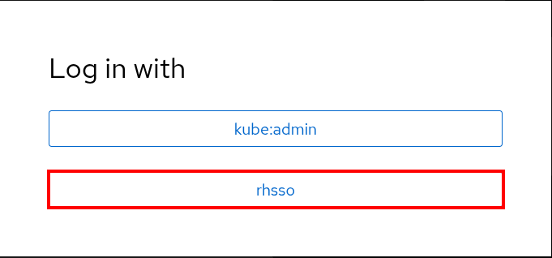
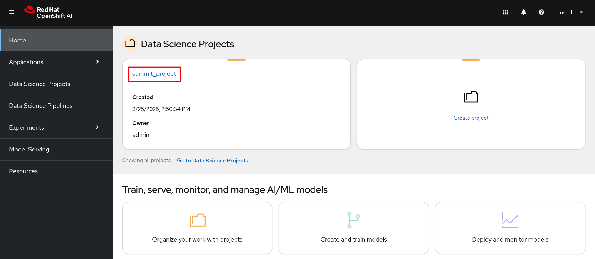
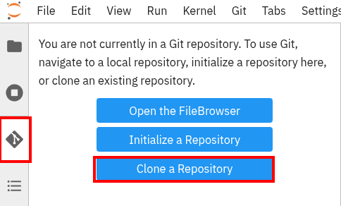
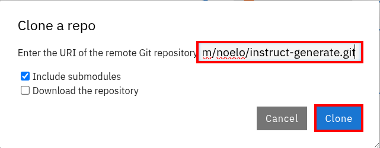
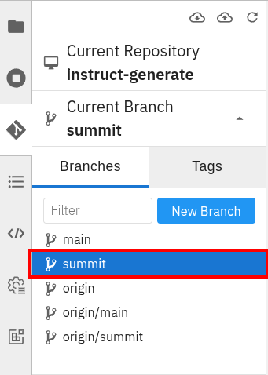
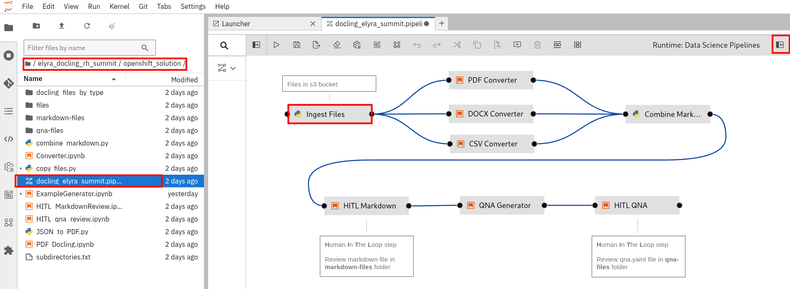
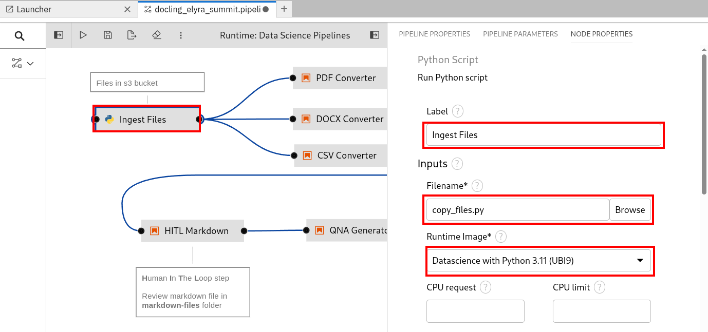
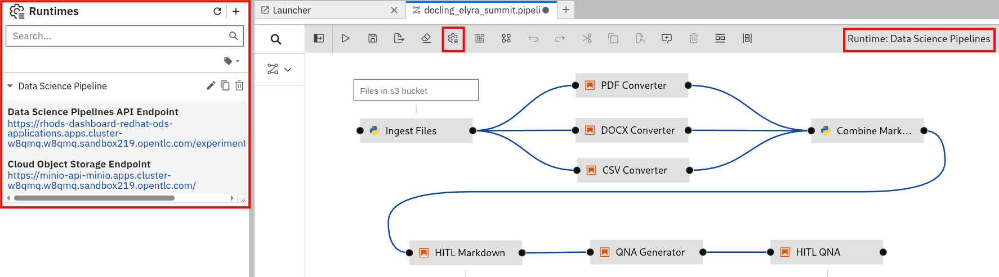
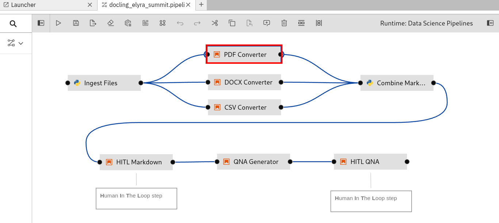
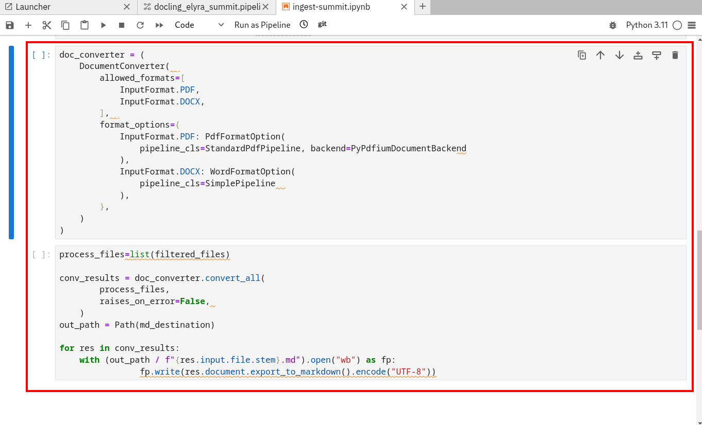

OpenShift AI
TODO - Give an overview of RHOAI and the solution on RHOAI/OpenShift TODO - Add architecture diagram
Granite Model Deployed to RHOAI
First, we’ll start out by taking a look at where our Granite model is deployed on OpenShift AI.
-
Click on the OpenShift AI route provided for you. Click on the Log in with OpenShift button.
-
Click on the rhsso button.
 -
Enter your username and password for the lab and click on Sign In.

You should now see the OpenShift AI dashboard. Click on the summit_project under Data Science Projects in the dashboard.

TODO - Put in screenshots of Granite deployed on RHOAI
Open the Workbench
-
Click on Workbench. We have one workbench with a Jupyter notebook running named elyra-docling-workbench.

OpenShift AI out of the box provides Jupyter, VS Code, Cuda, and other popular IDEs as workbench images. You can create custom workbench images if a default one doesn’t exist. -
You’ll need to login to you OpenShift AI workbench. Click on the rhsso button.
-
Enter your username and password for the lab and click on Sign In.
-
Your workbench with JupyterLab should now be open.

-
Click on the Git icon on the left menu and click Clone a repository.
 -
Clone the https://github.com/jhurlocker/elyra_docling_rh_summit.git repo.

Clone the https://github.com/noelo/instruct-generate repo as well.
You should now see the elyra_docling_rh_summit and instruct_generate directories in the file browser.
-
Open the instruct_generate directory and click on the Git icon on the left menu. Switch the branch to Summit.

Elyra
Elyra is a set of AI-centric extensions to JupyterLab, and its pipeline capabilities are a core feature. Here’s an overview of Elyra pipelines:
Visual Pipeline Editor
Elyra provides a visual interface for creating and managing data science and machine learning pipelines. This allows users to construct workflows by dragging and dropping components (like Jupyter notebooks and Python scripts) onto a canvas and connecting them.
Pipeline Nodes
Pipelines are composed of nodes, where each node represents a specific task. These tasks can be:
-
Executing Jupyter notebooks.
-
Running Python scripts.
-
Running R scripts.
These nodes can have dependencies, defining the order of execution.
Runtime Flexibility
Elyra pipelines are designed to be flexible and can be executed on various platforms:
-
Local/JupyterLab: For development and testing.
-
Apache Airflow: For production-ready workflow orchestration.
-
Kubeflow Pipelines: For cloud-native machine learning pipelines.
Runtime Configurations
Elyra uses runtime configurations to store metadata about the target execution environment. This allows pipelines to be portable across different platforms.
Generic and Runtime-Specific Pipelines
Elyra supports both generic pipelines (which can run on multiple platforms) and runtime-specific pipelines (which are designed for a particular platform).
Key Features and Benefits
-
Simplified Workflow Creation: The visual editor makes it easier to create complex workflows without writing extensive code.
-
Increased Productivity: By automating tasks and managing dependencies, Elyra helps data scientists and machine learning engineers focus on their core work.
-
Improved Reproducibility: Pipelines provide a consistent and reproducible way to execute workflows.
-
Scalability: Integration with platforms like Kubeflow Pipelines enables scalable execution of machine learning workflows.
-
Portability: The ability to run pipelines on different platforms provides flexibility and avoids vendor lock-in.
-
We’ll start by taking a look at our data science pipeline.
Open the elyra_docling_rh_summit/openshift_solution directory and open the docling_elyra_summit.pipeline. Click on the Ingest Files node and then click on the Open Panel icon to view the node properties.
 -
Elyra provides a lot of flexibility and configuration of nodes within a pipeline. The Filename and Runtime Image properties are required for every node.
This node runs the copy_files.py Python script with the Datascience with Python 3.11 (UBI9) runtime image.
 -
Click on the open runtimes icon. This OpenShift AI workbench image has the Data Science Pipelines runtimes pre-configured. Note the Data Science Pipelines API Endpoint points to your OpenShift AI instance.
OpenShift AI Data Science Pipelines has a dependency on s3 object storage. We’ll go over the s3 object store in upcoming sections.
 -
Docling
Docling is an open-source toolkit designed to streamline the process of converting various document formats, particularly PDFs, into structured data that’s readily usable by AI applications. Here’s a breakdown of its key aspects:
Document Conversion
Docling excels at parsing diverse document formats, including PDFs, DOCX, XLSX, HTML, and images. It transforms these documents into a unified, structured representation, facilitating data extraction.
Advanced PDF Understanding
A significant focus is on sophisticated PDF processing, going beyond basic text extraction. It analyzes page layout, determines reading order, and accurately recovers table structures. It can also understand other complex elements like code, formulas, and image classification.
AI-Driven:
Docling leverages state-of-the-art AI models, notably for layout analysis (DocLayNet) and table structure recognition (TableFormer). This AI-powered approach enables more accurate and nuanced document interpretation compared to traditional methods.
Integration with AI Ecosystem: It’s designed to seamlessly integrate with popular AI frameworks like LangChain and LlamaIndex. This makes it a valuable tool for applications involving Retrieval-Augmented Generation (RAG) and other LLM-driven tasks.
Open-Source and Accessible: Docling is released under the MIT license, promoting collaboration and community development. It’s designed to run efficiently on standard hardware, making it accessible to a wide range of users.
Key Features:
Ability to handle scanned PDFs with robust OCR support. Metadata extraction (title, authors, references, etc.). Flexible output formats (JSON, Markdown, HTML). Local execution capabilities for data privacy. Command-line interface (CLI) and Python API. In essence, Docling aims to bridge the gap between unstructured document data and the structured data needs of modern AI applications.
-
In your workbench with the docling_elyra_summit.pipeline open, double click on the PDF Converter node. This should open the ../../ingest-summit.ipynb Jupyter notebook.

-
Scroll down the notebook to the last two cells. This is where we’re coveconverting the different file types into markdown with Docling. TODO - expand on this a little more.
